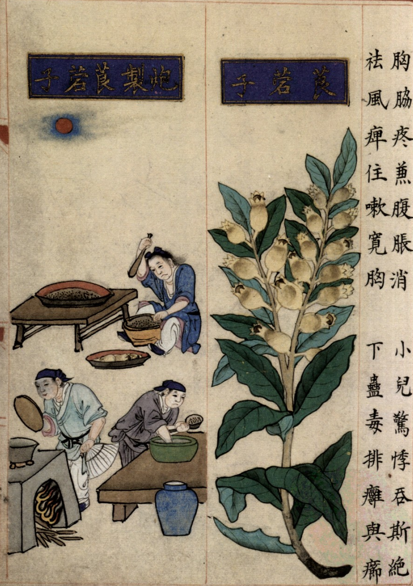
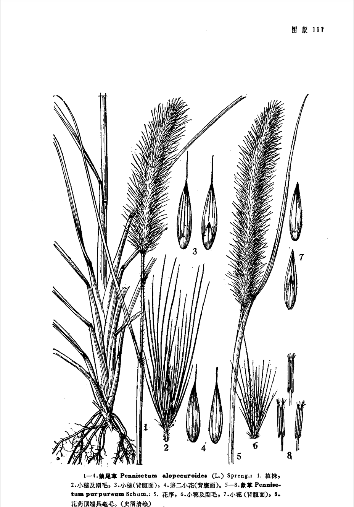

出现篇目
别名 狼尾草、 蕫蓈（《尔雅》作童粱）、野狼茅（《尔雅》）、孟（《尔雅》）、宿田翁 （《诗疏》）、守田（《诗疏》）
古代记载 《毛诗故训传》
稂，童梁。非溉草，得水而病也。笺云：兴者，喻共公之施政教，徒困病其民。稂当作“凉”，凉草，萧蓍之属。（《毛传》注《下泉》）
琅，童梁也。（《毛传》注《大田》）
《毛诗草木鸟兽虫鱼疏》
稂，童粱，禾秀为穗而不成，岩嶷然谓之童粱，今人谓之宿田翁，或谓守田也。甫田》云：“不稂不莠”，《外传》云：“马不过稂莠”，皆是也。
《毛诗正义》
稂、童粱。莠屬也（《毛诗正义》疏《下泉》）
《诗集传》
稂、童梁。（《诗集传》集注《大田》）
《本草纲目》
藏器曰∶野狼尾生泽地，似茅作穗。《广志》云∶子可作黍食。《尔雅》云∶孟，野狼尾。似茅，可以覆屋，是也。
时珍曰∶野狼尾茎、叶、穗、粒并如粟，而穗色紫黄，有毛。荒年亦可采食。许慎《说文 》云∶禾粟之穗，生而不成者，谓之 。其秀而不实者，名狗尾草，见草部。"
当代记载 《中国植物志》
狼尾草（Pennisetum alopecuroides），禾本科，狼尾草属。多年生。花果期夏秋季。我国自东北、华北经华东、中南及西南各省区均有分布；多生于海拔50-3 200米的田岸、荒地、道旁及小山坡上。日本、印度、朝鲜、缅甸、巴基斯坦、越南、菲律宾、马来西亚、大洋洲及非洲也有分布。可作饲料；也是编织或造纸的原料；也常作为土法打油的油杷子；也可作固堤防沙植物。。

<补遗雷公炮制便览>

<中国植物志>